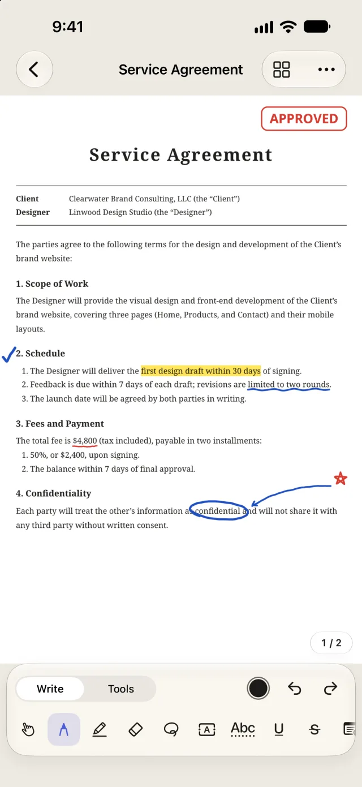
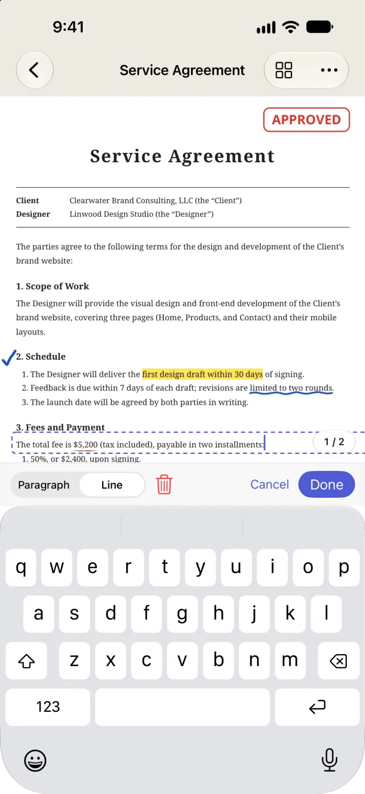
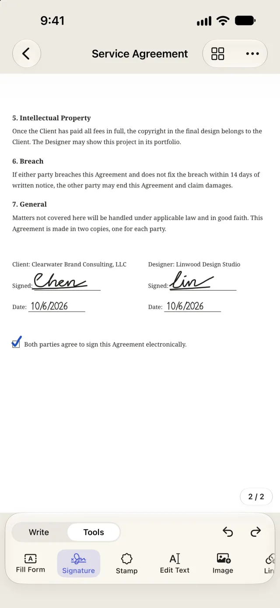
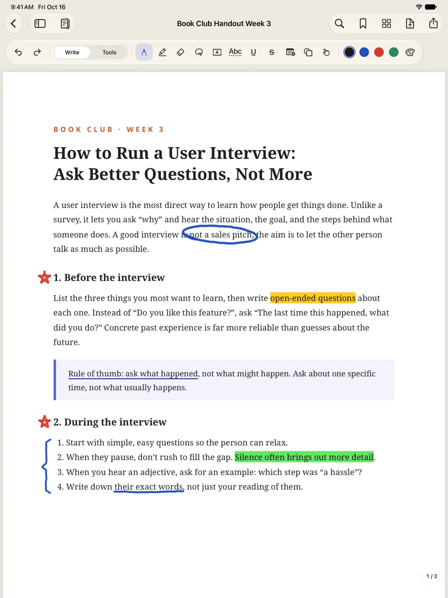
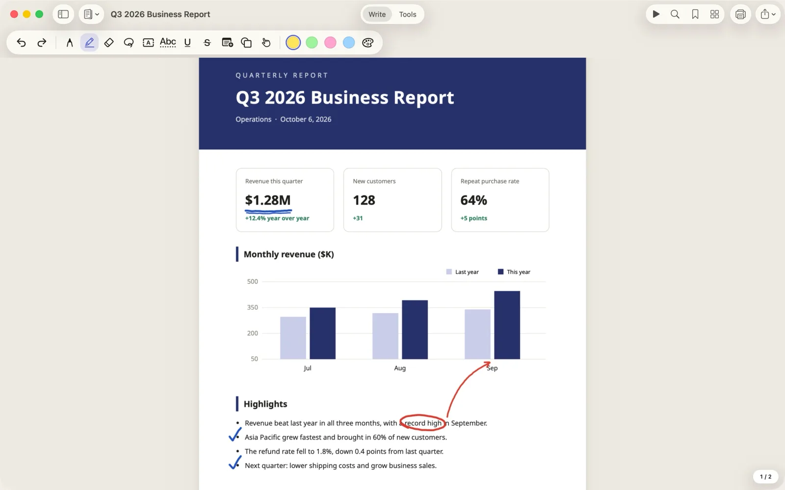

Sign
Sign with your finger or Apple Pencil, and save your signature so it's one tap away next time. When you need something more formal, use a certificate signature with a timestamp.
iPhone · iPad · Mac
And edit anything, like pro software.
Folium puts the tools you need for PDFs in one place: handwritten notes, signatures, forms, editing text directly, scanning, and converting to Word and Excel. It all happens on your device, so your documents never leave your hands.
Everyday PDF chores
No more moving files between three or four apps. Open a PDF and write on it, sign it, or edit it, all in one place.
Sign with your finger or Apple Pencil, and save your signature so it's one tap away next time. When you need something more formal, use a certificate signature with a timestamp.
Forms with fields, you just fill in. For scanned forms with no fields, Folium finds the boxes, lines, and checkboxes so you can fill them in one by one.
Spot a typo? Tap it and fix it right there, no need to track down the original Word file. You can also replace or insert images and add a paragraph.
Pen, highlighter, text boxes, sticky notes, shapes, and stamps: mark up however you like. Hold at the end of a stroke, and lines, arrows, circles, and boxes snap into clean shapes. On iOS 27 and later, your handwritten notes are searchable too.
Scan paper into a PDF with your camera. Once you run text recognition, you can search, select, and copy the text in your scans too.
Reorder, rotate, delete, insert, and merge pages, or copy a few pages over from another document. On iPad and Mac, drag in a PDF or an image to add it as new pages.
Plus conversion to Word and Excel, Office to PDF, redaction, passwords and permissions, page numbers and watermarks, page cropping, comparing two documents, file compression, and batch processing with Shortcuts.
Real screens
Everything below is a real screenshot of Folium.





Library
Sort documents into folders, tag them "To Sign" or "Done," and search the words inside your PDFs too. Folders are real folders in iCloud Drive, so the Files app and Finder show the same organization.
Folders can go inside folders. Drag documents over or choose "Move to..." from the menu to move several at once. When you delete a folder, the documents inside move up one level instead of disappearing with it.
A document can have several tags, in seven colors. Tap a tag to list every document that has it, across all your folders.
Search covers the text in your PDFs, scans you've run text recognition on, and the text boxes and form entries you've added. Tap a result to open the document right at that page.
On Mac, switch to a list and sort by name, date modified, pages, or size. Press ⌘F to search right away. Newly imported documents you haven't filed yet wait for you in Unfiled.
Folders, tags, and search are all free.
Three platforms
The things you do most on a phone are the smoothest: sign, fill in a form, make a quick note, fix a word, and send it right back.
Take notes, mark up, and highlight with Apple Pencil. Put two documents side by side and write in one while you read the other.
Menus, keyboard shortcuts, and multiple windows, designed for Mac. Open a PDF from Finder, edit it, and it saves back on its own. Converting and merging lots of files is faster too.
Documents sync through your own iCloud. One Folium Pro purchase works on all three platforms.
Privacy
Folium doesn't collect, upload, or share your personal data, and it doesn't keep track of which features you use.
Open it and start working. No ads, no analytics, and no tracking of any kind.
Text recognition, handwriting recognition, file conversion, and text editing all happen on your iPhone, iPad, or Mac.
Documents live on your device or in your own iCloud Drive. The developer can't see them.
Folium connects to the internet only for digital signature timestamps and certificate checks. What it sends is a hash and certificate details, never the content of your document.
Edit with confidence
What paying users care about most is that their documents never break or go missing. Folium is built around that, right down to how it saves.
The PDF you imported is kept untouched inside the document. Every change can be undone, and you can go back to versions you saved earlier.
When you save changes back to the original file, Folium compares every page and writes the file only once it matches what you see.
In a PDF that already has a digital signature, changes are always added to the end of the file. Not a single byte of the signed content is touched.
If you edit the same document on two devices, iCloud sync merges the changes from both instead of simply overwriting one of them.
Plans
Unlimited documents, no watermarks.
Buy once, use it forever. No subscription.
One purchase covers iPhone, iPad, and Mac, and you can share it with your family through Family Sharing.
Even if you get a refund, anything you changed with Pro can still be viewed, saved to the original, and exported. Your documents are never locked in.
TestFlight public beta
First install Apple's TestFlight app on your iPhone, iPad, or Mac, then join with the link below. The beta is limited to 100 people. Purchases in the beta are for testing only, and you won't actually be charged.
If the link says you can't join yet, Apple is still reviewing the build. Try again in a day or two.